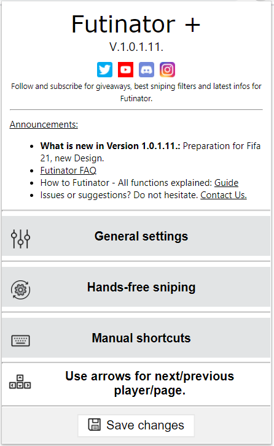

We are ready for Fifa 21 from september 30th!
Futinator is back again. You can download Futinator and Futinator + for Fifa 21 from september 30th here:
Info: Futinator + will be limited to 300 people for the beginning.
What is Futinator?
Snipe faster than others!
Futinator is a powerful chrome extension that helps to handle the FIFA Ultimate Team (FUT) web app easier. You can bind actions like quick buy, search, increase/decrease price and many more to keys on your keyboard. This allows you to snipe as quickly as possible.
Futinator Main Menu:
Why you should absolutely use Futinator?
Makes the difference!
Let Futinator do all the work for you like buying, bidding or listing. It has never been so easy to make coins. Snipe 10x faster than others on console, web app or companion app.
How does Futinator work?
Simple handling!
EA does not support third-party extensions. By installing and using, you assume all risks associated with usage.